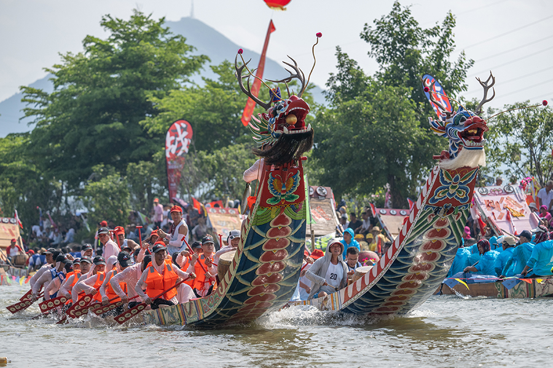

Chinese New Year
Also called the Spring Festival, it is celebrated with family gatherings, traditional food, decorations, and festive events. Dates follow the Chinese lunar calendar.
Also called the Spring Festival, it is celebrated with family gatherings, traditional food, decorations, and festive events. Dates follow the Chinese lunar calendar.
Celebrated on the fifteenth day of the first lunar month, this festival is associated with lantern displays, riddles, and sweet rice dumplings called tangyuan.

Observed on the fifth day of the fifth lunar month, the festival is associated with dragon boat racing, zongzi rice dumplings, and traditional customs.
Chongqing's skyline and riverfront areas create a striking setting for seasonal public celebrations. Specific events and viewing access vary each year.
Festival dates often follow the lunar calendar. Check official event announcements before travelling, as popular periods can bring crowded attractions, busy transport, and higher accommodation demand.